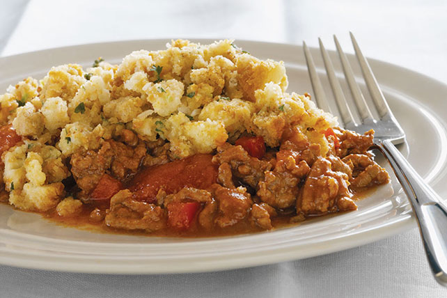

Sloppy Joe Skillet

Description
This is a warm comfort meal that comes together super quickly. It's a meal all in one but would pair well with a side salad.
Ingredients
- 1 pkg (6 oz) Stove Top Stuffing Mix for Chicken
- 1 & 2/3 cups Hot Water
- 1 lb. Ground Beef, lean
- 1 ea Red Pepper, small dice
- 1 can (14 oz) Stewed Tomatoes, undrained
- 1/2 cup Tomato Ketchup
- 1/4 cup Kraft Catalina Dressing
- 1 Tbsp Chili Powder
Directions
- Mix stuffing mix and hot water until moistened. Set aside.
- Brown meat in a skillet, drain.
- Add next 5 ingredients. Bring to a boil;cover. Simmer on medium-low heat until peppers are crisp-tender.
- Top with stuffing. Cover and simmer 3 minutes.
- Serve immediately.
Home